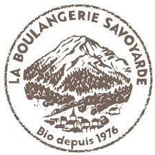

Accueil > Mes experiences professionelles
Mes experiences professionelles
Job d'été 2025 : Hôte de caisse chez la SEM des Bauges, Aillons-le-Jeune
Missions :
-
Accueil et conseil client
-
Répondre aux demandes mail et téléphonique client
-
Mise en place des équipements extérieurs (parasol, chaise, file d'attente,...)
-
Tenue de caisse et encaissements
Atouts développés :
-
Relation client
-
Gestion de caisse et espèces
-
Communication orale et écrite
-
Sens de l'organisation
Compétences acquises :
-
Travail en autonomie et en équipe
-
Gestion du stress en situation d'affluence
-
Capacité à s'adapter rapidement à un environnement de travail
-
Rigueur dans les opérations de caisse et suivi de procédures

Job d'été 2024 : Technicien de surface chez la Boulangerie Savoyarde, École
Missions :
-
Entretien des locaux
-
Nettoyage du matériel et respect des protocoles d'hygiène
Atouts développés :
-
Rigueur et sens du détail
-
Gestion du temps
-
Polyvalence
-
Respect des consignes d'hygiène et de sécurité
Compétences acquises :
-
Capacité à maintenir un environnement de travail propre et fonctionnel
-
Sens des responsabilités